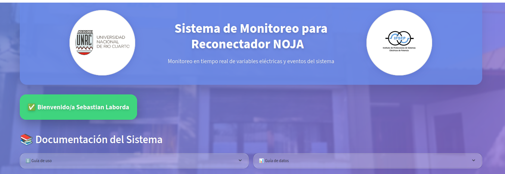

Documentación de la aplicación Streamlit
Esta sección documenta la interfaz web del sistema de monitoreo, implementada usando Streamlit. La aplicación proporciona una interfaz amigable para visualizar, monitorear y exportar datos del recloser OSM27.
Estructura de archivos
Streamlit/
├── streamlit_app.py
├── requirements.txt
└── assets/
├── escudo_ing1.png
├── ipsep_logo.jpeg
├── Logo_unrc_horizontal2.png
└── unrc_logo.jpg
Requisitos de la aplicación
La aplicación requiere las siguientes dependencias, listadas en requirements.txt:
streamlit==1.31.0
pandas
plotly
openpyxl
mitosheet
influxdb-client
streamlit-autorefresh
Funcionalidades principales
1. Inicio de sesión y seguridad
La aplicación cuenta con un sistema de inicio de sesion y registro.
Características: - Inicio de sesión seguro - Almacenamiento de usuarios registrados. _ Registro completo con confirmacion en mail. _ El inicio de sesion tiene una duracion de 30 dias. - Interfaz intuitiva con logo institucional.
2. Encabezado de la página
La aplicación muestra un encabezado institucional con los logos y el nombre del sistema.

Características: - Visualización de logos institucionales - Nombre del sistema destacado - Diseño responsivo y profesional
3. Guía de uso
La aplicación está diseñada para ser intuitiva y fácil de usar.
Características: - Instrucciones paso a paso - Explicación de todas las funcionalidades - Referencias rápidas - Ayuda interactiva
4. Guía de datos
Incluye documentación integrada sobre los datos mostrados.
Características: - Descripción de variables - Unidades de medida - Referencias técnicas - Ayuda contextual
5. Monitoreo en tiempo real
La aplicación muestra gráficos en tiempo real de las variables del recloser.
Características: - Actualización automática cada 15 segundos - Gráficos interactivos usando Plotly - Visualización de múltiples variables en simultáneo - Zoom y herramientas de navegación _ Visualizacion de Valores Actual, Medios, Maximos y Minimos.
6. Tabla de eventos
Muestra los eventos importantes registrados por el recloser.
Características: - Registro cronológico de eventos - Descripción detallada de cada evento - Actualización automática - Filtrado por fecha y hora
7. Exportación de datos
Permite exportar los datos mostrados en diferentes formatos.
Características: - Exportación a CSV y Excel - Selección de rango de fechas - Filtrado de variables a exportar - Descarga directa desde la interfaz
Guía de uso
La aplicación está diseñada para ser intuitiva y fácil de usar.
Pasos básicos: 1. Inicie sesión con sus credenciales institucionales 2. Explore los gráficos de monitoreo en tiempo real 3. Revise la tabla de eventos si necesita información específica 4. Use las herramientas de filtrado para analizar períodos específicos 5. Exporte los datos cuando necesite análisis offline
Código principal (streamlit_app.py)
El archivo principal contiene toda la lógica de la aplicación:
- Sistema de autenticación
- Conexión con InfluxDB
- Visualización de datos
- Manejo de eventos
- Exportación de datos
- Interfaz de usuario
El código está organizado en secciones claras y documentadas, facilitando su mantenimiento y extensión.
Configuración y despliegue
Para ejecutar la aplicación:
- Instalar dependencias:
pip install -r requirements.txt
- Ejecutar la aplicación:
streamlit run streamlit_app.py
- Acceder a la interfaz web:
- Abra su navegador en
http://localhost:8501 - Inicie sesión con sus credenciales
- ¡Comience a monitorear!
La aplicación se actualizará automáticamente cada 15 segundos para mostrar los datos más recientes del recloser.